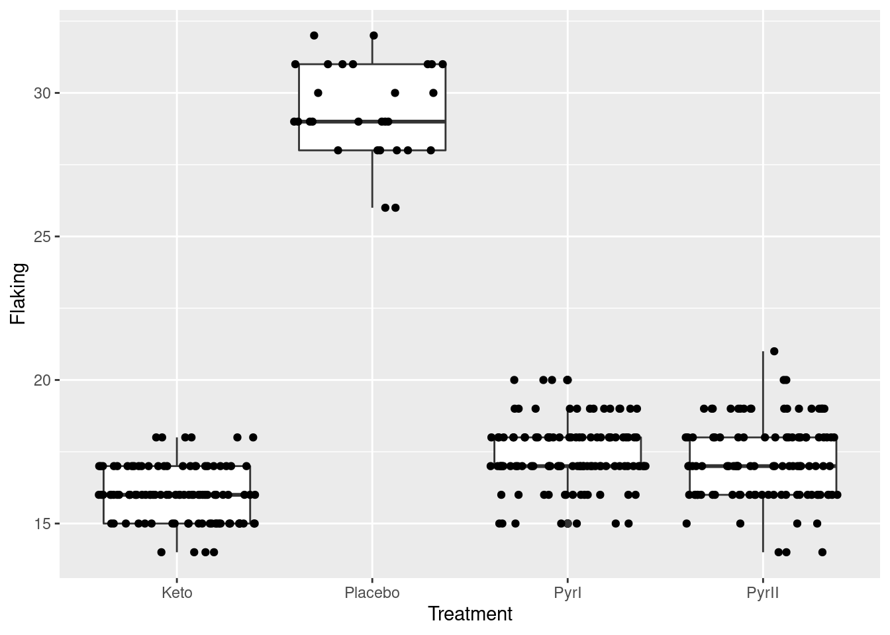
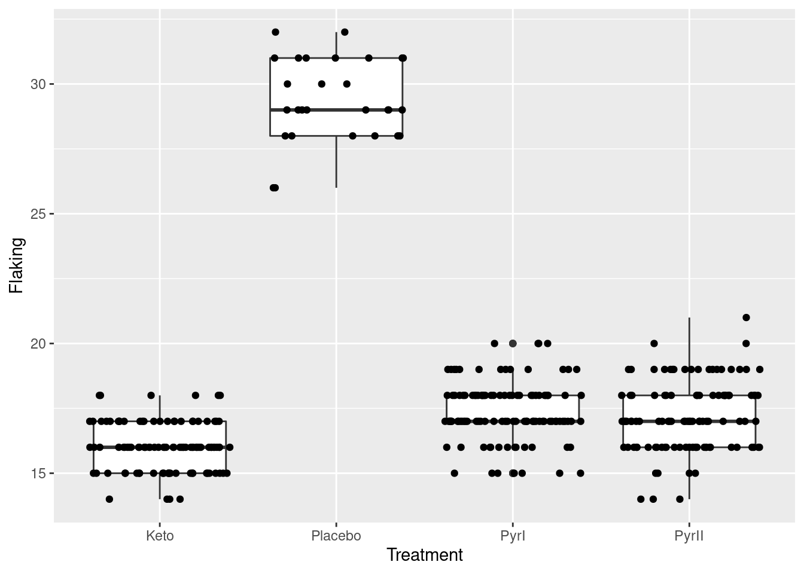

Chapter 22 The Bootstrap
Packages for this chapter:
22.1 Air conditioning failures
Back in 1963, there was a report on failures in air-conditioning equipment in aircraft. For one aircraft, the air-conditioning equipment failed 12 times, and the number of hours it ran before failing each time was recorded. The data are in link. Boeing was interested in the mean failure time, because the company wanted to plan for engineers to fix the failures (and thus needed to estimate a failure rate).
There is randomization here. Your answers will differ slightly from mine, unless you throw in this before you start (or at least before you generate your first random numbers).
Read in the data, and observe that you have the correct number of rows. (Note that the failure times are in ascending order).
What do you notice about the shape of the distribution of failure times? Explain briefly.
Obtain the means of 1000 bootstrap samples (that is, samples from the data with replacement). Save them.
Make a normal quantile plot of your bootstrap distribution. What do you see? Explain briefly.
Obtain the 95% bootstrap percentile confidence interval for the mean.
Obtain the 95% bootstrap-\(t\) confidence interval for the mean, and compare your two intervals.
Obtain the BCa 95% confidence interval for the mean.
Compare the BCa confidence interval with the other ones. Which one would you recommend? Explain briefly.
22.2 Air conditioning failures: bootstrapping the median
With a skewed data distribution such as the air-conditioning
failure times, we might be interested in inference for the median. One
way to get a confidence interval for the median is to invert the sign
test, as in smmr, but another way is to obtain a bootstrap
sampling distribution for the median. How do these approaches compare
for the air-conditioning data? We explore this here.
Read in the air-conditioning data again (if you don’t already have it lying around). The link is in the previous question.
Use
smmrto get a confidence interval for the median (based on the sign test).Obtain the bootstrap distribution of the sample median. Make a normal quantile plot of it. What do you notice? Explain briefly.
Obtain a 95% bootstrap percentile confidence interval for the median. How does it compare with the one you obtained earlier?
Obtain a 95% BCa interval. Compare it with the two other intervals you found.
22.3 Comparing eyesight
Do people see on average better with their left eye or their right eye, or is there no difference? To find out, 15 subjects were shown a sequence of images, some to their left eye and some to their right (with a blindfold on the other eye). The subjects were asked to identify some objects in each image, and were given an overall score for each eye, based on their ability to identify objects with each eye. (A higher score is better.) Data in .
Read in and display (some of) the data.
Explain briefly why looking at differences (say right minus left) makes sense for these data, and calculate and save a dataframe with the differences added to it.
Make a suitable normal quantile plot, and describe what it tells you.
Obtain a bootstrap distribution of the sample median.
Make a histogram of your bootstrap distribution of the median. Use a lot of bins, such as the default 30, for this. What do you notice about the distribution? Why did it come out this way?
Find a 95% percentile interval for the population median.16
Find the BCA 95% confidence interval for the population median difference.
What do your intervals tell us about any possible difference between left eye and right eye in terms of ability to identify objects in images? Do the intervals agree or disagree about this?
22.4 Bootstrapping the IRS data
You might recall the IRS data from when we were learning about the sign test. The idea was that we wanted to see how long “on average” it took people to fill out a tax form. The data are in http://ritsokiguess.site/datafiles/irs.txt.
Read in and display (some of) the data. There is only one column of data, so you can pretend the values are separated by anything.
Obtain a bootstrap distribution of the sample median.
Make a suitable graph of the bootstrap distribution of the median. What seems odd about it? Why did that happen? (Hint: use more bins on your plot than usual, like 50.)
Find 95% percentile and bootstrap-\(t\) intervals for the population median. (Hint: your dataframe of bootstrapped medians may still be
rowwise, so you might need to runungroupfirst.)
My solutions follow:
22.5 Air conditioning failures
Back in 1963, there was a report on failures in air-conditioning equipment in aircraft. For one aircraft, the air-conditioning equipment failed 12 times, and the number of hours it ran before failing each time was recorded. The data are in link. Boeing was interested in the mean failure time, because the company wanted to plan for engineers to fix the failures (and thus needed to estimate a failure rate).
There is randomization here. Your answers will differ slightly from mine, unless you throw in this before you start (or at least before you generate your first random numbers).
- Read in the data, and observe that you have the correct number of rows. (Note that the failure times are in ascending order).
Solution
This is a .csv so read_csv is the thing:
my_url <- "https://raw.githubusercontent.com/nxskok/pasias/master/air_conditioning.csv"
aircon <- read_csv(my_url)##
## ── Column specification ──────────────────────────────────────────────────────────────────────────────────────────────────────────────────────────────────────────────────────────────────────
## cols(
## failure = col_double(),
## hours = col_double()
## )## # A tibble: 12 x 2
## failure hours
## <dbl> <dbl>
## 1 1 3
## 2 2 5
## 3 3 7
## 4 4 18
## 5 5 43
## 6 6 85
## 7 7 91
## 8 8 98
## 9 9 100
## 10 10 130
## 11 11 230
## 12 12 487Twelve rows (12 failure times).
\(\blacksquare\)
- What do you notice about the shape of the distribution of failure times? Explain briefly.
Solution
Make a suitable graph. The obvious one is a histogram:

You’ll have to play with the number of bins (there are only 12 observations). I got 7 from the Freedman-Diaconis rule:
## [1] 7I was a little suspicious that the data would not be much like normal (I have run into failure times before), so I kept away from the Sturges rule.
Another possibility is a one-group boxplot:

If you like, you can do a normal quantile plot. I rank that third here, because there is nothing immediately implying a comparison with the normal distribution, but I would accept it:

Pick a visual and defend it.
All three of these graphs are showing a strong skewness to the right.
Extra: this is probably not a surprise, because a time until failure cannot be less than zero, and distributions with a limit tend to be skewed away from that limit. (If you look back at the data, there are some very small failure times, but there are also some very big ones. The very small ones are saying that the lower limit matters.) If you were modelling these times until failure, you might use a distribution like the exponential or gamma or Weibull.
\(\blacksquare\)
- Obtain the means of 1000 bootstrap samples (that is, samples from the data with replacement). Save them.
Solution
Something like this, therefore:
tibble(sim = 1:1000) %>%
rowwise() %>%
mutate(sample = list(sample(aircon$hours, replace = TRUE))) %>%
mutate(sample_mean = mean(sample)) -> means
means## # A tibble: 1,000 x 3
## # Rowwise:
## sim sample sample_mean
## <int> <list> <dbl>
## 1 1 <dbl [12]> 83.2
## 2 2 <dbl [12]> 52.3
## 3 3 <dbl [12]> 122.
## 4 4 <dbl [12]> 82.3
## 5 5 <dbl [12]> 115.
## 6 6 <dbl [12]> 150.
## 7 7 <dbl [12]> 141.
## 8 8 <dbl [12]> 69.2
## 9 9 <dbl [12]> 90
## 10 10 <dbl [12]> 69.4
## # … with 990 more rowsForgetting the rowwise will cause all sorts of trouble.
\(\blacksquare\)
- Make a normal quantile plot of your bootstrap distribution. What do you see? Explain briefly.
Solution
This:

This is still skewed to the right (it has a curved shape, or, the low values and the high values are both too high compared to the normal).
Extra: this is less skewed than the original data was, because, with a sample size of 12, we have a little help from the Central Limit Theorem, but not much. This picture is the one that has to be normal enough for \(t\) procedures to work, and it is not. This comes back into the picture when we compare our confidence intervals later.
Also, it makes sense to see how normal a sampling distribution of a mean is, so a normal quantile plot would be my first choice for this.
\(\blacksquare\)
- Obtain the 95% bootstrap percentile confidence interval for the mean.
Solution
This is the 2.5 and 97.5 percentiles of the bootstrapped sampling distribution of the mean:
## 2.5% 97.5%
## 46.74583 180.92917\(\blacksquare\)
- Obtain the 95% bootstrap-\(t\) confidence interval for the mean, and compare your two intervals.
Solution
The key is to remember that the original sample (and thus each bootstrap sample) had \(n=12\), so there are \(12-1=11\) df. (The fact that there were 1000 bootstrap samples is neither here nor there). This is how I like to do it:
## [1] 2.200985## [1] 26.18964 185.96786The c(-1, 1) thing is the calculation version of the \(\pm\),
and gets both limits at once. Pull the above apart to see how it works. If
you don’t like that, you might prefer something like this:
the_mean <- mean(means$sample_mean)
the_sd <- sd(means$sample_mean)
margin <- t_star * the_sd
the_mean - margin## [1] 26.18964## [1] 185.9679I apologize for the crazy first line of that! As for comparison: the bootstrap-\(t\) interval goes down a lot further, though the upper limits are quite similar (on this scale). Both intervals are very long and don’t tell us much about the population mean time to failure, which is not very surprising given the small sample size (\(n=12\)) and the large variability in the data.
Extra: the non-normality of the bootstrap (sampling) distribution says that we should definitely not trust the bootstrap-\(t\), and probably not the bootstrap percentile interval either. Which brings us to the next part.
\(\blacksquare\)
- Obtain the BCa 95% confidence interval for the mean.
Solution
This means (possibly) installing and (certainly) loading the bootstrap package, and then:
theta <- function(x) {
mean(x)
}
bca_all <- with(aircon, bcanon(hours, 1000, theta))
bca <- bca_all$confpoints
bca## alpha bca point
## [1,] 0.025 55.25
## [2,] 0.050 61.25
## [3,] 0.100 70.50
## [4,] 0.160 78.50
## [5,] 0.840 160.50
## [6,] 0.900 178.00
## [7,] 0.950 204.25
## [8,] 0.975 228.75Pull out the ones from this that you need: the top one and the bottom one, to get an interval of 55.2 to 228.8.
I seem to need to define the function theta first and pass it into bcanon as the third input. You may have more luck with bcanon(hours, 1000, mean) than I did. Try it.
Or, if you feel like some extra coding: turn this matrix into a data frame, grab the rows you want, and then the column you want:
## [1] 55.25 228.75\(\blacksquare\)
- Compare the BCa confidence interval with the other ones. Which one would you recommend? Explain briefly.
Solution
In this example, the bootstrap-\(t\) and percentile intervals are very different, so we should use neither of them, and prefer the BCa interval.
Extra: as usual in this kind of case, the BCa contains values for the mean pulled out into the long tail, but that’s a proper adjustment for the sampling distribution being skewed.
\(\blacksquare\)
22.6 Air conditioning failures: bootstrapping the median
With a skewed data distribution such as the air-conditioning
failure times, we might be interested in inference for the median. One
way to get a confidence interval for the median is to invert the sign
test, as in smmr, but another way is to obtain a bootstrap
sampling distribution for the median. How do these approaches compare
for the air-conditioning data? We explore this here.
- Read in the air-conditioning data again (if you don’t already have it lying around). The link is in the previous question.
Solution
my_url <- "https://raw.githubusercontent.com/nxskok/pasias/master/air_conditioning.csv"
aircon <- read_csv(my_url)##
## ── Column specification ──────────────────────────────────────────────────────────────────────────────────────────────────────────────────────────────────────────────────────────────────────
## cols(
## failure = col_double(),
## hours = col_double()
## )## # A tibble: 12 x 2
## failure hours
## <dbl> <dbl>
## 1 1 3
## 2 2 5
## 3 3 7
## 4 4 18
## 5 5 43
## 6 6 85
## 7 7 91
## 8 8 98
## 9 9 100
## 10 10 130
## 11 11 230
## 12 12 487\(\blacksquare\)
- Use
smmrto get a confidence interval for the median (based on the sign test).
Solution
Input to ci_median is data frame and column:
## [1] 7.002319 129.998291\(\blacksquare\)
- Obtain the bootstrap distribution of the sample median. Make a normal quantile plot of it. What do you notice? Explain briefly.
Solution
The usual do-it-yourself bootstrap:
tibble(sim = 1:1000) %>%
rowwise() %>%
mutate(samples = list(sample(aircon$hours, replace = TRUE))) %>%
mutate(medians = median(samples)) -> medsI actually copied and pasted my code from the previous problem, changing mean to median.
As for a plot, well, this:

Not only does this not look very normal, but also there are those curious horizontal patches of points (that, you might recall, are characteristic of a discrete distribution). This has happened because there are only a few possible medians: the median has to be either a data value or halfway between two data values, so there are only something like \(2(12)-1=23\) different possible medians, with the ones in the middle being more likely.
This also shows up on a histogram, but only if you have enough bins. (If you don’t have enough bins, some of the neighbouring possible values end up in the same bin; here, the aim is to have enough bins to show the discreteness, rather than the usual thing of having few enough bins to show the shape.)

\(\blacksquare\)
- Obtain a 95% bootstrap percentile confidence interval for the median. How does it compare with the one you obtained earlier?
Solution
Also, the usual:
## 2.5% 97.5%
## 12.5 115.0This goes down and up not quite so far as the interval from smmr. That might be because the smmr interval is too wide (based on a not-very-powerful test), or because the bootstrap quantile interval is too narrow (as it usually is). It’s hard to tell which it is.
\(\blacksquare\)
- Obtain a 95% BCa interval. Compare it with the two other intervals you found.
Solution
Yet more copying and pasting (from the previous question):
theta <- function(x) {
median(x)
}
bca_all <- with(aircon, bcanon(hours, 1000, theta))
bca <- bca_all$confpoints
bca## alpha bca point
## [1,] 0.025 12.5
## [2,] 0.050 12.5
## [3,] 0.100 18.0
## [4,] 0.160 30.5
## [5,] 0.840 94.5
## [6,] 0.900 98.0
## [7,] 0.950 100.0
## [8,] 0.975 115.0Again, I seem to need to define the tiny function, while you can probably call bcanon(hours, 1000, median). Try it and see.
My BCa interval is a little longer than the bootstrap percentile interval and a little shorter than the one that came from the sign test. I would guess that the BCa interval is the most trustworthy of the three, though there is here not that much difference between them. All the intervals are again very long, a reflection of the small sample size and large variability.
\(\blacksquare\)
22.7 Comparing eyesight
Do people see on average better with their left eye or their right eye, or is there no difference? To find out, 15 subjects were shown a sequence of images, some to their left eye and some to their right (with a blindfold on the other eye). The subjects were asked to identify some objects in each image, and were given an overall score for each eye, based on their ability to identify objects with each eye. (A higher score is better.) Data in .
- Read in and display (some of) the data.
Solution
This is a csv, so no surprises:
##
## ── Column specification ──────────────────────────────────────────────────────────────────────────────────────────────────────────────────────────────────────────────────────────────────────
## cols(
## person = col_double(),
## right = col_double(),
## left = col_double()
## )## # A tibble: 15 x 3
## person right left
## <dbl> <dbl> <dbl>
## 1 1 50 47
## 2 2 45 45
## 3 3 33 31
## 4 4 22 24
## 5 5 99 78
## 6 6 79 76
## 7 7 4 13
## 8 8 36 46
## 9 9 62 45
## 10 10 51 44
## 11 11 27 23
## 12 12 15 14
## 13 13 26 34
## 14 14 83 79
## 15 15 86 8115 observations, with the subjects labelled by number, and a score for each subject and each eye.
\(\blacksquare\)
- Explain briefly why looking at differences (say right minus left) makes sense for these data, and calculate and save a dataframe with the differences added to it.
Solution
This is matched pairs data, with two observations for each subject. A matched pairs analysis, whether by a sign test or a matched-pairs \(t\)-test, would be based on one difference for each subject, and so those would make sense to calculate. (You’ll recall that a matched pairs analysis uses the differences and not the original data.)
Thus, saving back into our original dataframe:
## # A tibble: 15 x 4
## person right left difference
## <dbl> <dbl> <dbl> <dbl>
## 1 1 50 47 3
## 2 2 45 45 0
## 3 3 33 31 2
## 4 4 22 24 -2
## 5 5 99 78 21
## 6 6 79 76 3
## 7 7 4 13 -9
## 8 8 36 46 -10
## 9 9 62 45 17
## 10 10 51 44 7
## 11 11 27 23 4
## 12 12 15 14 1
## 13 13 26 34 -8
## 14 14 83 79 4
## 15 15 86 81 5Extra: this is one of those cases where having long data would make it very much more difficult to work out the differences for each person. Try it and see. How will you match up the two measurements for each person?
\(\blacksquare\)
- Make a suitable normal quantile plot, and describe what it tells you.
Solution
A normal quantile plot of the differences, therefore, since normality of the two individual scores is immaterial:

We have what I think is best described as “long tails”, with the high values being too high and the low ones being a bit too low for a normal distribution. I think this is a better description than “outliers” because outliers are isolated unusual values, not five observations out of fifteen!
The plot is telling us that a matched-pairs \(t\)-test is questionable, and that we might do a sign test instead. Or, as we explore in this question, find a bootstrap distribution (in this case, for the median).
Extra: the one kind of sensible plot that uses the original data in this situation would be a scatterplot, since the right and left scores are matched up:

I added the line \(y = x\) to the plot. The value of doing that is that a point to the right and below the line has the right-eye score bigger than the left-eye one, and vice versa for a point to the left and above. This plot tells us that a small majority of the subjects had a higher score with the right eye, and for the ones that had a higher score with the left eye, the difference wasn’t usually very big.
This plot tells us nothing about normality of differences, though (not without some careful looking), which is one of the things we usually care about.
\(\blacksquare\)
- Obtain a bootstrap distribution of the sample median.
Solution
Borrow the idea from lecture, replacing mean with median:
tibble(sim = 1:1000) %>%
rowwise() %>%
mutate(sample = list(sample(sight$difference, replace = TRUE))) %>%
mutate(my_median = median(sample)) -> meds
meds## # A tibble: 1,000 x 3
## # Rowwise:
## sim sample my_median
## <int> <list> <dbl>
## 1 1 <dbl [15]> 3
## 2 2 <dbl [15]> 3
## 3 3 <dbl [15]> 2
## 4 4 <dbl [15]> 2
## 5 5 <dbl [15]> 3
## 6 6 <dbl [15]> 4
## 7 7 <dbl [15]> 3
## 8 8 <dbl [15]> 3
## 9 9 <dbl [15]> 3
## 10 10 <dbl [15]> 3
## # … with 990 more rowsThe steps are:
- create a dataframe with a column called
simto label the simulations - from here on out, work “rowwise”, that is, with one row at a time
- generate a bootstrap sample for each row. A bootstrap sample is fifteen observations rather than just one, so we are making a list-column and thus the
listhas to go on the front - work out the median of each bootstrap sample. Remember, the
rowwiseapplies until you cancel it,17 and so this will be the median of the bootstrap sample on each row, one at a time.
As ever, if you want to see what’s going on, run this one line at a time.
\(\blacksquare\)
- Make a histogram of your bootstrap distribution of the median. Use a lot of bins, such as the default 30, for this. What do you notice about the distribution? Why did it come out this way?
Solution
For this histogram, there is no need to specify a number of bins (unless you want to):
## `stat_bin()` using `bins = 30`. Pick better value with `binwidth`.
The distribution is very discrete (this shows up more clearly with more bins).
The data values are all integers (and therefore so are the differences). The median of an odd number of data values must be one of the data values, and the bootstrap samples only contain (varying numbers of copies of) the differences in the original dataset, so each bootstrap sample must have a median that is an integer too.
Extra: in case you are thinking that this happened because the data values were integers, no, it would happen even if the data were decimal numbers. Let’s make some fake data of 15 random normals and then do the same thing again:
## # A tibble: 15 x 1
## x
## <dbl>
## 1 -2.02
## 2 0.867
## 3 -0.00982
## 4 -0.123
## 5 -0.431
## 6 0.702
## 7 1.22
## 8 -0.0818
## 9 1.06
## 10 0.318
## 11 -0.0179
## 12 -0.370
## 13 0.0115
## 14 -1.57
## 15 0.0529and once again bootstrap the median:
tibble(sim = 1:1000) %>%
rowwise() %>%
mutate(sample = list(sample(fake_data$x, replace = TRUE))) %>%
mutate(my_median = median(sample)) -> meds2
meds2## # A tibble: 1,000 x 3
## # Rowwise:
## sim sample my_median
## <int> <list> <dbl>
## 1 1 <dbl [15]> 0.0115
## 2 2 <dbl [15]> 0.0115
## 3 3 <dbl [15]> -0.123
## 4 4 <dbl [15]> -0.0179
## 5 5 <dbl [15]> 0.0115
## 6 6 <dbl [15]> 0.318
## 7 7 <dbl [15]> 0.0115
## 8 8 <dbl [15]> -0.00982
## 9 9 <dbl [15]> 0.0529
## 10 10 <dbl [15]> 0.0115
## # … with 990 more rowsYou can see even from these few that the bootstrap distribution of the median has repeats, so there should also be some discreteness here:
## `stat_bin()` using `bins = 30`. Pick better value with `binwidth`.
The discreteness is a property of the fact that we were bootstrapping the median, and the median has to be one of the data values.
To confirm that, recall that our original data were integers:
## # A tibble: 15 x 4
## person right left difference
## <dbl> <dbl> <dbl> <dbl>
## 1 1 50 47 3
## 2 2 45 45 0
## 3 3 33 31 2
## 4 4 22 24 -2
## 5 5 99 78 21
## 6 6 79 76 3
## 7 7 4 13 -9
## 8 8 36 46 -10
## 9 9 62 45 17
## 10 10 51 44 7
## 11 11 27 23 4
## 12 12 15 14 1
## 13 13 26 34 -8
## 14 14 83 79 4
## 15 15 86 81 5but even for these, if you bootstrap the mean, you don’t get the same discreteness:
tibble(sim = 1:1000) %>%
rowwise() %>%
mutate(sample = list(sample(sight$difference, replace = TRUE))) %>%
mutate(my_mean = mean(sample)) -> means
means %>%
ggplot(aes(x = my_mean)) + geom_histogram()## `stat_bin()` using `bins = 30`. Pick better value with `binwidth`.
This is too many bins for 1000 bootstrap samples, so the shape is kind of irregular, but there are not the big gaps that the bootstrap distribution of the sample median has. Indeed, this ought to be somewhere near normal and is:

(This is saying that the Central Limit Theorem is really helping, even for a sample size of only 15 from clearly non-normal data, so the paired \(t\) may not be as bad as we would have thought.)
\(\blacksquare\)
- Find a 95% percentile interval for the population median.18
Solution
The percentile interval comes from the middle 95% of the bootstrap distribution of medians:
## 2.5% 97.5%
## -2 4The bootstrap percentile interval goes from \(-2\) to 4. Like the CI for the median based on the sign test, the ends of this interval must be data values.
Extra: for comparison, the interval from the sign test is this:
## [1] -1.997070 4.994629which is, when rounded off, from \(-2\) to 5, very like the percentile interval.
\(\blacksquare\)
- Find the BCA 95% confidence interval for the population median difference.
Solution
Load (and if necessary install) the bootstrap package, and then:
## alpha bca point
## [1,] 0.025 -2
## [2,] 0.050 -2
## [3,] 0.100 0
## [4,] 0.160 0
## [5,] 0.840 3
## [6,] 0.900 3
## [7,] 0.950 4
## [8,] 0.975 4\(-2\) to 4, in this case like the percentile interval.19 Note how this one is data values also.
\(\blacksquare\)
- What do your intervals tell us about any possible difference between left eye and right eye in terms of ability to identify objects in images? Do the intervals agree or disagree about this?
Solution
The intervals are not quite all the same, but one thing they have in common is that they all have a negative lower limit and a positive upper one (more positive than the negative one is negative). This says that 0 is a plausible difference in each case, and thus it is reasonable to conclude that there is no evidence of any difference between the two eyes, based on this sample of 15 subjects.
The intervals do all go more positive than negative, which says that if anything the scores are better with the right eye than the left on average (from the way around that we took the differences). However, there is no evidence here that this is any more than chance.
\(\blacksquare\)
22.8 Bootstrapping the IRS data
You might recall the IRS data from when we were learning about the sign test. The idea was that we wanted to see how long “on average” it took people to fill out a tax form. The data are in http://ritsokiguess.site/datafiles/irs.txt.
- Read in and display (some of) the data. There is only one column of data, so you can pretend the values are separated by anything.
Solution
Pretty much any of the read_ functions will work, even this one:
##
## ── Column specification ──────────────────────────────────────────────────────────────────────────────────────────────────────────────────────────────────────────────────────────────────────
## cols(
## Time = col_double()
## )## # A tibble: 30 x 1
## Time
## <dbl>
## 1 91
## 2 64
## 3 243
## 4 167
## 5 123
## 6 65
## 7 71
## 8 204
## 9 110
## 10 178
## # … with 20 more rowsOne column called Time.
\(\blacksquare\)
- Obtain a bootstrap distribution of the sample median.
Solution
The lecture notes use the exact same dataset, so you can borrow ideas from there:
Set up a dataframe with one row for each bootstrap sample you’re going to draw, 1000 in this case:
## # A tibble: 1,000 x 1
## sim
## <int>
## 1 1
## 2 2
## 3 3
## 4 4
## 5 5
## 6 6
## 7 7
## 8 8
## 9 9
## 10 10
## # … with 990 more rowsCreate a column with a new bootstrap sample for each sim. This means doing rowwise first and then wrapping the sampling in list because you are creating a list-column of samples:
## # A tibble: 1,000 x 2
## # Rowwise:
## sim sample
## <int> <list>
## 1 1 <dbl [30]>
## 2 2 <dbl [30]>
## 3 3 <dbl [30]>
## 4 4 <dbl [30]>
## 5 5 <dbl [30]>
## 6 6 <dbl [30]>
## 7 7 <dbl [30]>
## 8 8 <dbl [30]>
## 9 9 <dbl [30]>
## 10 10 <dbl [30]>
## # … with 990 more rowsEach thing in sample has 30 observations in it (one bootstrap sample). If you want, you can unnest to take a look at the values; they should be the ones in the dataset, possibly with extra repeats.
Next, work out the median of each bootstrapped sample, which is simple because we are still working rowwise:
tibble(sim = 1:1000) %>%
rowwise() %>%
mutate(sample = list(sample(irs$Time, replace = TRUE))) %>%
mutate(my_median = median(sample)) -> bs
bs## # A tibble: 1,000 x 3
## # Rowwise:
## sim sample my_median
## <int> <list> <dbl>
## 1 1 <dbl [30]> 209
## 2 2 <dbl [30]> 162
## 3 3 <dbl [30]> 172.
## 4 4 <dbl [30]> 186
## 5 5 <dbl [30]> 206.
## 6 6 <dbl [30]> 196
## 7 7 <dbl [30]> 136.
## 8 8 <dbl [30]> 154.
## 9 9 <dbl [30]> 194
## 10 10 <dbl [30]> 194
## # … with 990 more rowsAs you realize, bs stands for “bootstrap”. Of course.
\(\blacksquare\)
- Make a suitable graph of the bootstrap distribution of the median. What seems odd about it? Why did that happen? (Hint: use more bins on your plot than usual, like 50.)
Solution
The medians are already in a dataframe, so go straight ahead:

What we are seeing at this resolution is that the distribution is very irregular, with funny holes in it, more than you would expect even with this many bins. By way of comparison, the bootstrap distribution of the mean looks a lot smoother:
tibble(sim = 1:1000) %>%
rowwise() %>%
mutate(my_sample = list(sample(irs$Time, replace = TRUE))) %>%
mutate(my_mean = mean(my_sample)) %>%
ggplot(aes(x = my_mean)) + geom_histogram(bins = 50) This is somewhat irregular, because we really have too many bins, but there are not nearly so many holes and irregular heights as on the plot for the median. I had you use a lot of bins in this special case because I wanted you to see just how irregular the bootstrapped distribution for the median really was.
This is somewhat irregular, because we really have too many bins, but there are not nearly so many holes and irregular heights as on the plot for the median. I had you use a lot of bins in this special case because I wanted you to see just how irregular the bootstrapped distribution for the median really was.
So why did that happen? Think about what the sample median is for 30 observations: it is the mean of the 15th and 16th smallest values when you arrange them in order. A bootstrap sample must contain the same values as the original dataset (just probably not the same frequencies of them). So the median of a bootstrap sample must be the average of two of the values in the original dataset, and probably two that were close together. What that means is that there are not very many possible medians of the bootstrap samples, and they form a clearly discrete rather than a continuous distribution. (The sample mean, on the other hand, uses all the values in the bootstrap sample, and so there are a lot more possible bootstrap means than bootstrap medians; the distribution of those is as good as continuous.)
What this means is that bootstrapping for medians is odd (it always looks like this), but that’s what the bootstrap distribution looks like.
\(\blacksquare\)
- Find 95% percentile and bootstrap-\(t\) intervals for the population median. (Hint: your dataframe of bootstrapped medians may still be
rowwise, so you might need to runungroupfirst.)
Solution
The percentile interval comes from the middle 95% of the bootstrap distribution of medians. The dataframe bs is still rowwise, so we have to undo that first to do it the obvious way:
## # A tibble: 1 x 2
## ci1 ci2
## <dbl> <dbl>
## 1 123. 215Or, pull out just that column and find the two quantiles of that, for which there are two ways, the base R way:
## 2.5% 97.5%
## 122.95 215.00and the slightly odd-looking:
## 2.5% 97.5%
## 122.95 215.00All of these get you to the same place. There is even one more:
## # A tibble: 2 x 1
## ci
## <dbl>
## 1 123.
## 2 215This takes advantage of a (newish) behaviour of summarize: if your summary is more than one thing, it puts one of the summaries on each row, as if you had done something like this:
## # A tibble: 2 x 1
## ci
## <dbl>
## 1 123.
## 2 215If you had rowwise in the back of your mind, you might have tried this. Try it up to but not including the unnest to see how it works.
For the bootstrap \(t\), estimate the population median as the sample median:
## [1] 172.5get its standard error from the SD of the bootstrap distribution of medians:
## [1] 24.04391then go up and down twice this (or 1.96 if you believe in \(z\)):
## [1] 124.4122 220.5878Extra: in this case, we also have the CI for the median that came out of the sign test:
## [1] 119.0065 214.9955This one is actually very close to the bootstrap percentile interval, while the bootstrap \(t\) interval is higher at both ends.
\(\blacksquare\)
I was also going to have you do a bootstrap-t interval, but I’m not completely convinced I got that right when I was explaining it to you before.↩
That is done using ungroup, should you ever need to stop working rowwise. This seems like an odd choice of function, since the usual use of ungroup is to undo a group-by, but what ungroup actually does is to remove any special properties a dataframe has, including both groups and any rowwise behaviour.↩
I was also going to have you do a bootstrap-t interval, but I’m not completely convinced I got that right when I was explaining it to you before.↩
They don’t often agree this well, but all of these intervals in this situation but have data values at their endpoints, and all of our data values are integers.↩